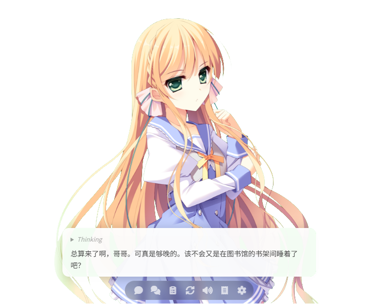

Kisaki 是一款基于 Tauri 的 AI 桌面桌宠应用。她可以和你聊天、用语音回应你、切换不同的角色形象—— 搭载大语言模型，让你的桌面从此不再孤单。

Kisaki 搭载 AI 大脑，能听懂你的话、用语音回应你，还能帮你做更多事。
接入 OpenAI 兼容 API，支持自定义模型和地址。角色拥有独立人设，每次对话都自然流畅。
基于阿里云 CosyVoice 实时语音合成，角色用声音回应你。支持自定义音色，日文/中文随心切换。
支持多种角色，每个角色拥有独立立绘、姿势、情绪表达。一键导入/导出角色包（.zip），轻松分享。
AI 可主动调用工具——切换角色、获取时间、查询天气，未来还将支持更多实用功能。
支持多会话切换，历史消息持久化保存。每个角色独立会话，话题不串扰。
AI 回复文本可翻译为指定语言显示。中日双语自如切换，满足不同用户需求。
每个角色都有独特的外观、性格和人设。导入角色包即可一键切换。
想要自定义角色？查看创建角色指南，制作属于你自己的桌宠伙伴。
选择你的平台，下载最新版本。完全免费，开源透明。
从上方下载区选择对应平台的安装包。Windows 用户运行 .msi 安装程序，macOS 用户拖动 .app 到 Applications 文件夹。
# 开发者可直接从源码运行
git clone https://github.com/AoralsFout/Kisaki.git
cd Kisaki && npm install && npm run tauri dev
打开设置面板，填入 OpenAI 兼容 API 地址和 Key。支持任何兼容 OpenAI 接口的服务（如 OpenAI 官方、Ollama、vLLM 等）。
| API 地址 | OpenAI 兼容接口地址 |
| API Key | 你的 API Key（仅本地保存） |
| 模型 | 对话模型名称，如 gpt-4o |
| TTS Key | 阿里云百炼 DashScope Key（可选） |
首次启动时角色目录为空。进入设置 → 角色，点击「添加角色」，导入一个角色包（.zip）或新建角色。
应用内所有改动保存在用户数据目录中，升级或重装不会丢失。
点击桌面上的角色，弹出输入框。打字发送消息，角色会用 AI 回复你——配合打字机效果和 TTS 语音播报，就像在和一个真正的朋友聊天。
角色包是一个 .zip 文件，推荐结构如下：
<角色id>/
character.json # 角色定义（id、名称、姿势/情绪/服装、立绘索引、语音等）
prompt.txt # 系统提示词（人设）
images/
*.png # 立绘图片
打包后在设置 → 角色中导入即可。导入时以 character.json 中的 id 字段作为角色标识，同名角色会自动跳过、不覆盖已有修改。